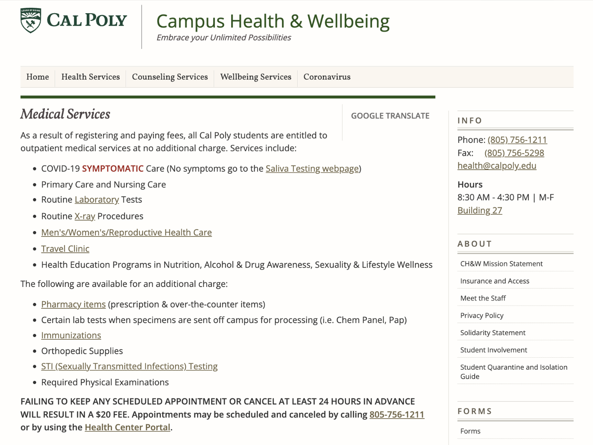
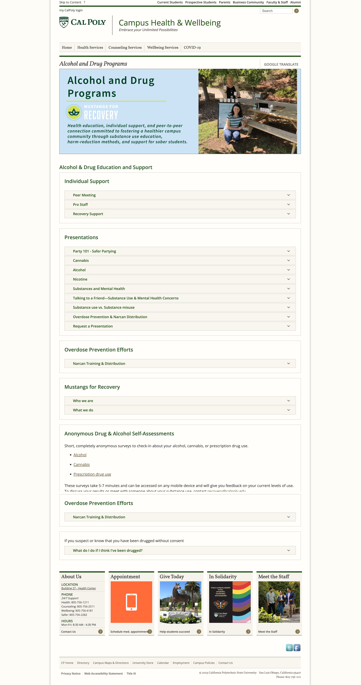
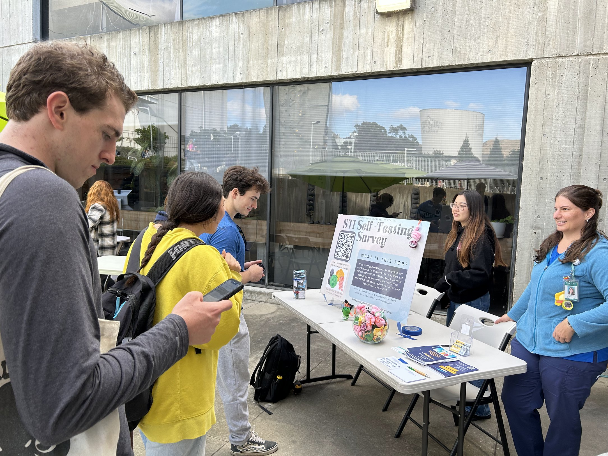
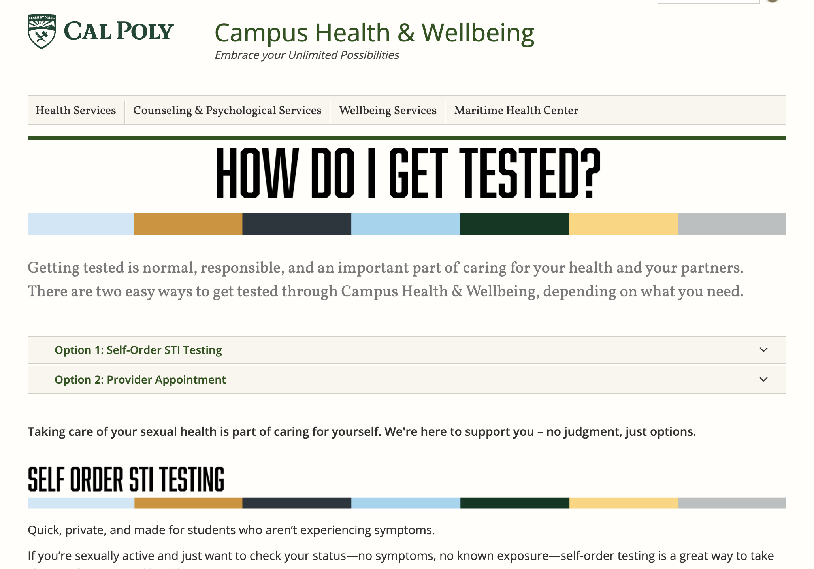
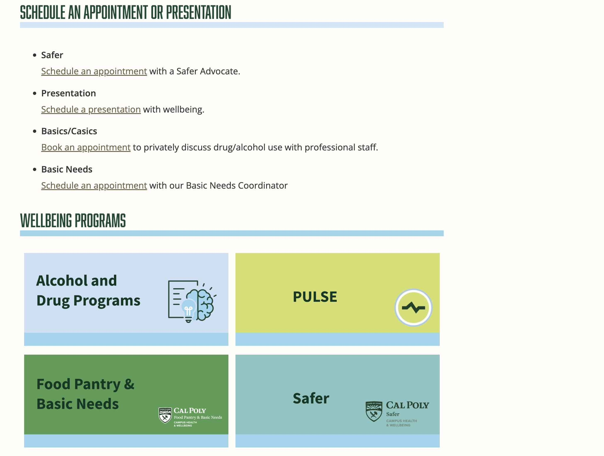
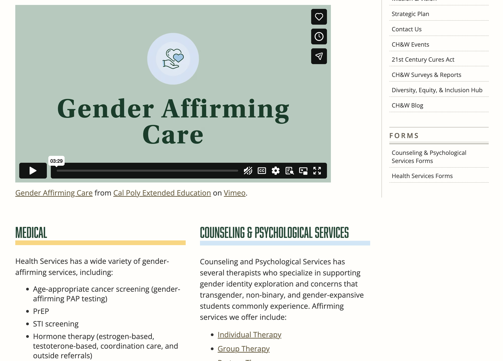

Cal Poly Health & Wellbeing · UX Designer · 2023 to 2025
Turning a neglected health portal into a trusted source of information.
For two years, I worked with clinicians, administrators, student teams, and campus stakeholders to improve how 23,000+ students found, understood, and acted on health information. It became less about one redesign, and more about slowly rebuilding trust in a system students had stopped relying on.
2 yrsof ongoing UX, content, and implementation work
Final product
A clearer, more trustworthy portal for student health information.
Here’s what students ended up using: clearer hierarchy, more scannable content, and stronger paths to critical actions.
A closer look at the redesigned pages and interaction patterns.
1 / 3
Challenge
Students weren’t using the site when they needed it most.
<1
The starting point
engagement per student each year, across 23,000+ students. For a campus health resource, that meant students were skipping an official source of care information.
The site was organized around departments. Students showed up with urgent, task-based questions: how do I book an appointment, where’s testing information, what do I do next?
For students
Health information was hard to scan and hard to trust
Critical actions were buried several clicks deep
Medical language made sensitive topics more intimidating
For the organization
Staff answered questions the site should have handled
Pages were hard to keep consistent in Drupal 7
Important services weren’t discoverable enough
Research
Understanding why students stopped trusting the portal.
Before redesigning anything, I wanted to know why students weren’t using a resource meant to support them through some of their most important health decisions.
3 anglesAuditing the experience as a studentEngagement and drop-off analyticsIn-person booths and surveys

Audit: dense text and unclear entry points.

Audit: booking and next steps buried several clicks deep.

Going off-screen. In-person booths and surveys with Pulse, to understand how students navigated sensitive resources like STI testing.
What kept showing up
01
Students search by task, not departmentBook an appointment, find testing, understand symptoms, figure out what’s next.
02
Dense content lowers trustLong paragraphs, clinical language, and inconsistent formatting made information harder to evaluate.
03
Small friction breaks trustOne broken link, outdated page, or buried action was often enough to make students leave.
What that meant for the work
The challenge wasn’t adding more content. It was helping students find, understand, and act on information with confidence.
What I created
The redesign became a system of pages, patterns, and content decisions.
Across two years, I redesigned and built service pages, navigation patterns, content structures, icons, and accessibility improvements.
01 · Scannable health information
Sensitive health pages students could actually understand.
For topics like STI testing, HIV testing, PrEP, and HPV prevention, I rebuilt dense clinical copy around plain language, short sections, accordions, and clear next steps.

02 · Action-oriented service pages
Critical actions, found before students gave up.
Students often knew what they needed, but the site hid the next step. I moved booking, forms, eligibility, and support to the top of key service pages.

03 · Inclusive resource discovery
Resources students struggled to find, brought forward.
With stakeholders, I restructured buried content like gender-affirming care and name and gender change resources around what students were trying to do.

04 · Consistent portal patterns
Reusable patterns inside a constrained CMS.
I designed reusable cards, accordions, section layouts, and icon treatments, so the portal felt cohesive and was easier to maintain.
Execution
Designing within the system we had.
The site ran on Drupal 7, so there were no modern design system tools or flexible components. The work was designing practical patterns that could actually be built in the CMS.
ConstraintHow I responded
Limited CMS flexibility
Reusable content and layout patterns
Long-form clinical content
Clearer hierarchy, sections, and accordions
Small team, distributed stakeholders
Figma to align everyone before building
Images needed to be accessible
Built directly in Drupal, with proper alt text
82%
A deliberate tradeoff
of users were on desktop, so I designed for desktop first. It was a call based on how the portal was actually used, not an assumption.
Impact
From ignored resource to trusted destination.
The redesign didn’t create a one-time spike. Engagement kept compounding over time.
20.8K → 320K
Engaged sessions, January to August
From before the redesign to 2025, comparing the same window each year. 207K came in the first year alone.
Why it mattered
The portal started acting like a real source of truth. Students engaged with content longer, fewer left key pages, and the organization had a clearer framework for publishing health information.
Reflection
What two years of stewardship taught me.
Trust isn’t built in one launch. It’s built through small moments: a clearer label, a working link, a warmer explanation, a page that actually answers the question a student came with.
01
Trust is built gradually.A health resource becomes reliable when every interaction shows it’s accurate, maintained, and useful.
02
Good content design reduces anxiety.In sensitive contexts, clear language and structure make the next step feel less intimidating.
03
Constraints can create better systems.Drupal 7 forced me to be deliberate, reusable, and realistic about what could scale.
04
Small improvements compound.The biggest impact came from improving the system again and again, not one big launch.